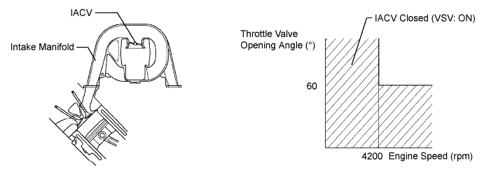
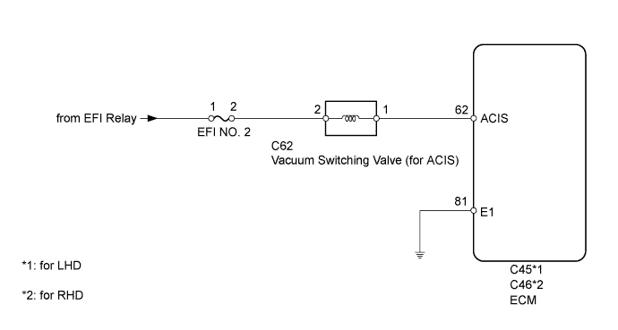
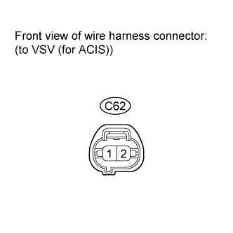
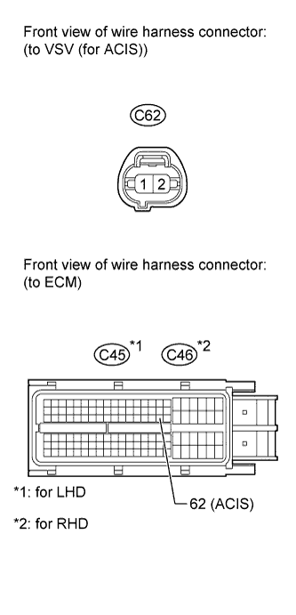
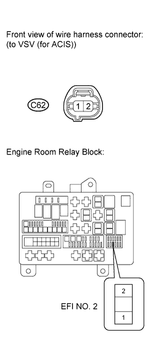

DTC P0660 Intake Manifold Tuning Valve Control Circuit / Open (Bank 1) |

| DTC Code | DTC Detection Condition | Trouble Area |
| P0660 | The following conditions are met simultaneously for 0.5 seconds or more (2 trip detection logic):
|
|

| 1.PERFORM ACTIVE TEST USING INTELLIGENT TESTER (VSV (for ACIS)) |
Connect the intelligent tester to the DLC3.
Start the engine and turn the tester on.
Enter the following menus: Powertrain / Engine / Active Test / Active the VSV for Intake Control.
Check if operating noise can be heard when operating the air intake control valve using the intelligent tester.
|
| ||||
| OK | ||
| ||
| 2.INSPECT VACUUM SWITCHING VALVE ASSEMBLY (for ACIS) |
Inspect the vacuum switching valve assembly (Click here).
|
| ||||
| OK | |
| 3.CHECK VACUUM SWITCHING VALVE ASSEMBLY (for ACIS) (POWER SOURCE VOLTAGE) |
 |
Disconnect the VSV connector.
Measure the voltage according to the value(s) in the table below.
| Tester Connection | Condition | Specified Condition |
| C62-2 - Body ground | Engine switch on (IG) | 11 to 14 V |
|
| ||||
| OK | |
| 4.CHECK HARNESS AND CONNECTOR (VSV (for ACIS) - ECM) |
 |
Disconnect the VSV connector.
Disconnect the ECM connector.
Measure the resistance according to the value(s) in the table below.
| Tester Connection | Condition | Specified Condition |
| C62-1 - C45-62 (ACIS) | Always | Below 1 Ω |
| C62-1 or C45-62 (ACIS) - Body ground | Always | 10 kΩ or higher |
| Tester Connection | Condition | Specified Condition |
| C62-1 - C46-62 (ACIS) | Always | Below 1 Ω |
| C62-1 or C46-62 (ACIS) - Body ground | Always | 10 kΩ or higher |
|
| ||||
| OK | ||
| ||
| 5.CHECK HARNESS AND CONNECTOR (VSV (for ACIS) - EFI NO. 2 FUSE) |
 |
Disconnect the VSV connector.
Remove the EFI No. 2 fuse from the engine room relay block.
Measure the resistance according to the value(s) in the table below.
| Tester Connection | Condition | Specified Condition |
| C62-2 - EFI No. 2 fuse terminal 2 | Always | Below 1 Ω |
| C62-2 or EFI No. 2 fuse terminal 2 - Body ground | Always | 10 kΩ or higher |
|
| ||||
| OK | ||
| ||